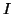
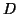
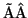

Paramaters for placing the vdW sphere within the atomistic part; only needed if vAFM and SciFi are to work together. Should specify two parameters: (i) atom number which is used to measure the distance to the vdW sphere,

, and the distance
(in
) to the bottom of the vdW sphere from this atom.
Example: Atom_Sphere{#,dist 15 1.25